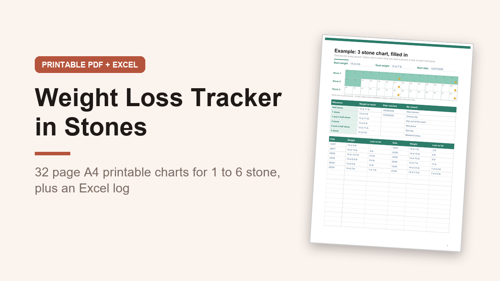

Weight Loss Tracker in Stones and Pounds, A4 Printable Charts and Excel Log
GBP 5.00 · instant digital download

A weight loss tracker made for UK scales: stones and pounds first, kilograms too, A4 paper and UK spelling.
What you get: 2 files.
1.
A printable A4 PDF, 32 pages, not editable, you print it and write on it.
Inside: how to use, a before you start page (weighing and measuring tips), a stones, pounds and kilograms conversion table, a filled in example chart, colour in goal charts for 1, 2, 3, 4, 5 and 6 stone (one box per pound, a star at every half stone, with a milestone and reward table and a weigh-in log on each page), colour in charts for 5, 10, 15, 20, 25, 30, 35 and 40 kg (one box per half kilo), a 52 week weigh-in log over 2 pages, monthly body measurements, 3 pages of weekly habit trackers (12 weeks), a non scale wins page, 2 progress photo pages, a reward milestones page, 2 monthly check ins and a notes page.
2.
An editable Excel workbook (.xlsx) with 5 sheets: Start here, Progress, Weigh-ins (260 rows), Measurements and Converter.
Type your weight in stones and pounds or in kilograms and it converts both ways, shows the change each week, total lost, how far to your goal, your next half stone and a chart of your last 12 weigh-ins.
A worked example is filled in.
Opens in Excel, Google Sheets and Numbers.
This is a tracker only, it gives no diet or health advice.
Digital download, nothing is posted..
What happens after you buy
Payment and delivery are handled by Gumroad. You get the download straight after paying, and a copy of the link by email. Nothing is posted to you.
Tags: weight loss tracker, stone tracker, weight loss chart, stones and pounds, weight tracker, a4 printable, weigh in log, excel tracker, uk planner, slimming tracker